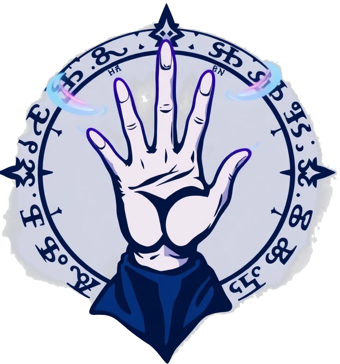

<header>
    <div class="logo">
        
        <h1 class="flicker">Vigilance Terminal</h1>
    </div>
    <p class="subtitle" id="sidebar-subtitle">Navigation</p>
</header>

<nav id="main-nav-bar">
    <!-- GROUP 1: OPERATIONS -->
    <div class="nav-group">
        <h4 class="nav-group-title">Operations Center</h4>
        <a href="liberated-toads-event.html" class="nav-button special-mission">
            
            <span>ACTIVE MISSION</span>
            <span class="nav-badge pulse">LIVE</span>
        </a>
        <a href="quests.html" class="nav-button">
            
            <span>Quest Log</span>
        </a>
        <a href="global-war.html" class="nav-button">
            
            <span>Global Power Projection</span>
            <span class="nav-badge" style="background: #ef4444;">NEW</span>
        </a>
        <a href="maps.html" class="nav-button">
            
            <span>Tactical Maps</span>
        </a>
        <a href="battlefield.html" class="nav-button">
            
            <span>Battlefield Reports</span>
        </a>
    </div>

    <!-- GROUP 2: FACTION SYSTEMS -->
    <div class="nav-group">
        <h4 class="nav-group-title">Faction Systems</h4>
        <a href="regal-empire-system.html" class="nav-button">
            
            <span>Regal Diet</span>
        </a>
        <a href="civil-war.html" class="nav-button">
            
            <span>MK Civil War</span>
        </a>
        <a href="liberated-toads-system.html" class="nav-button">
            
            <span>Liberated Toads</span>
        </a>
        <a href="koopa-troop.html" class="nav-button"> 
            
            <span>Koopa Troop</span>
        </a>
        <a href="onyx-hand.html" class="nav-button">
            
            <span>Onyx Covens</span>
        </a>
        <a href="directory.html#faction/moonfang_pack" class="nav-button">
            
            <span>Moon Phases</span>
        </a>
        <a href="directory.html#faction/mages_guild" class="nav-button">
            
            <span>Arcane Orb</span>
        </a>
        <a href="family-tree.html" class="nav-button">
            
            <span>Dynasty View</span>
        </a>
        <a href="rakasha-system.html" class="nav-button">
            
            <span>Rakasha Totems</span>
        </a>
        <a href="iron-legion.html" class="nav-button">
            
            <span>War Council</span>
        </a>
        <a href="peach-loyalists.html" class="nav-button">
            
            <span>Peach Loyalists</span>
        </a>
        <a href="mushroom-regency.html" class="nav-button">
            
            <span>Mushroom Regency</span>
        </a>
        <a href="directory.html#faction/fawfuls_furious_freaks" class="nav-button">
            
            <span>Fury Meter</span>
        </a>
    </div>

    <!-- GROUP 3: INTELLIGENCE & SOCIAL -->
    <div class="nav-group">
        <h4 class="nav-group-title">Intelligence & Comms</h4>
        <a href="assembly.html" class="nav-button">
            
            <span>WAHbook Feed</span>        
            <span class="nav-badge" id="wahbook-notification" style="display:none;">NEW</span>
        </a>
        <a href="assembly.html#intel" class="nav-button">
            
            <span>Rumors & Intel</span>
        </a>
        <a href="directory.html" class="nav-button">
            
            <span>Faction Directory</span>
        </a>
        <a href="intel.html" class="nav-button">
            
            <span>Intel Dossiers</span>
        </a>

    </div>
<div class="nav-group">
    <h4 class="nav-group-title">Diplomacy</h4>
    <a href="alliances.html" class="nav-button">
        
        <span>Alliance Monitor</span>
        <span class="nav-badge" style="background: #22c55e;">NEW</span>
    </a>
    <a href="relations.html" class="nav-button">
        
        <span>Faction Relations</span>
    </a>
    <a href="societal-values.html" class="nav-button">
        
        <span>Societal Values</span>
    </a>
</div>
    <!-- GROUP 4: SOCIETAL ANALYSIS -->
    <div class="nav-group">
        <h4 class="nav-group-title">Societal Analysis</h4>
        <a href="research.html" class="nav-button">
            
            <span>National Research</span>
        </a>
        <a href="species.html" class="nav-button">
            
            <span>Demographics</span>
        </a>
        <a href="politics.html" class="nav-button">
            
            <span>Politics</span>
        </a>
        <a href="plagues.html" class="nav-button">
            
            <span>Plagues & Bio-Threats</span>
        </a>        
        <a href="laws.html" class="nav-button">
            
            <span>Cultural Database</span>
        </a>
        <a href="religion.html" class="nav-button">
            
            <span>Religion</span>
        </a>
    </div>

    <!-- GROUP 5: PERSONNEL & LOGISTICS -->
    <div class="nav-group">
        <h4 class="nav-group-title">Personnel & Logistics</h4>
        <a href="guilds.html" class="nav-button">
            
            <span>Guilds & Charters</span>
        </a>
        <a href="currency.html" class="nav-button">
            
            <span>Exchange Rates</span>
        </a>
    </div>

    <!-- GROUP 6: ARCHIVES -->
    <div class="nav-group">
        <h4 class="nav-group-title">Historical Archives</h4>
        <a href="calendar.html" class="nav-button">
            
            <span>Calendar</span>
        </a>
        <a href="timeline.html" class="nav-button">
            
            <span>Timeline</span>
        </a>
        <a href="bookshelf.html" class="nav-button">
            
            <span>Bookshelf</span>
        </a>
        <a href="library.html" class="nav-button">
            
            <span>Public Libraries</span>
        </a>
        <a href="artifacts.html" class="nav-button">
            
            <span>Collected Artifacts</span>
        </a>
    </div>
</nav>

<footer style="margin-top: auto;">
    <button id="switch-operator-btn">Switch Operator</button>
    <p>SYSTEM STATUS: <span id="debug-toggle-btn" class="status-ok" title="Toggle Debug Mode">ONLINE</span></p>
    <p>&copy; Waluigi, Evil Genius</p>
</footer>